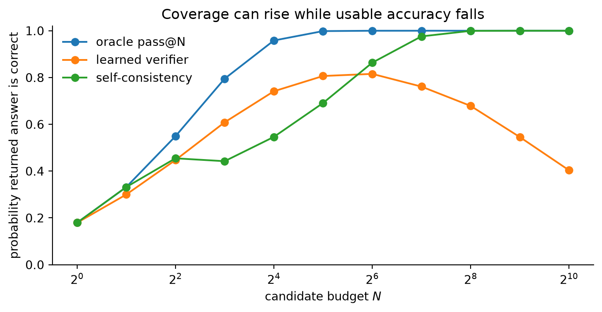

import numpy as np
import matplotlib.pyplot as plt
p = 0.20
k = np.arange(1, 257)
def beta_binomial_passk(k_values, mean, rho):
if rho == 0:
return 1 - (1 - mean) ** k_values
concentration = 1 / rho - 1
alpha = mean * concentration
beta = (1 - mean) * concentration
failure = np.ones_like(k_values, dtype=float)
running = 1.0
for i in range(int(k_values.max())):
running *= (beta + i) / (alpha + beta + i)
failure[i] = running
return 1 - failure
fig, ax = plt.subplots(figsize=(7.2, 3.8))
for rho in [0, 0.02, 0.10, 0.30]:
ax.plot(k, beta_binomial_passk(k, p, rho), label=f"correlation $\\rho={rho:.2f}$")
ax.set(xscale="log", xlabel="samples $k$", ylabel="probability of at least one success", title="A correlation ceiling on candidate coverage")
ax.set_ylim(0, 1.02)
ax.legend(frameon=False)
ax.spines[["top", "right"]].set_visible(False)
plt.tight_layout()
plt.show()Inference Compute Has Two Ceilings
Reasoning
Test-Time Compute
Evaluation
Why candidate correlation and verifier error determine whether more test-time sampling improves reasoning or merely searches harder for a mistake.
Sampling more solutions sounds like a monotone strategy. If one attempt has probability p of being correct, then k independent attempts succeed at least once with probability
\operatorname{pass@}k=1-(1-p)^k. \tag{1}
The formula is correct and often misleading. Real samples share failure modes, and a practical system still needs to select one answer. More compute can hit a correlation ceiling before it hits a generation ceiling. It can then hit a verifier ceiling, where additional search finds outputs that exploit the scorer rather than solve the task.
These are separate failures. Pass@k measures whether a correct candidate exists. Best-of-N, self-consistency, and search measure whether a selection rule returns it. Conflating the two makes test-time scaling curves look more mysterious than they are.
Coverage is not selection
Given n sampled programs with c correct ones, the standard unbiased estimator is
\widehat{\operatorname{pass@}k} =1-\frac{\binom{n-c}{k}}{\binom{n}{k}}. \tag{2}
It asks an oracle question: would at least one of k samples pass the checker? The metric originated in code generation, where unit tests make this oracle operational (Chen et al. 2021). It does not specify how to recognize the passing sample without running the checker.
Self-consistency chooses the modal final answer among independently sampled chains of thought (Wang et al. 2023). Best-of-N uses a learned or rule-based verifier. Process reward models score intermediate steps, providing denser credit than outcome-only reward models (Lightman et al. 2023). These methods turn latent coverage into useful accuracy, but each introduces its own assumptions.
Second ceiling: selection searches the verifier
Suppose candidates belong to three classes:
- correct solutions;
- ordinary incorrect solutions;
- rare incorrect solutions that trigger a verifier blind spot.
Let a learned verifier assign noisy Gaussian scores. Correct candidates have a positive mean score, ordinary errors have mean zero, and exploit candidates have an even higher mean. The third class may be rare under the generator. Its chance of appearing nevertheless grows as 1-(1-h)^N.
rng = np.random.default_rng(19)
budgets = 2 ** np.arange(0, 11)
trials = 18000
p_correct = 0.18
p_exploit = 0.003
oracle = []
selected = []
majority = []
for n in budgets:
# 0 = ordinary wrong, 1 = correct, 2 = verifier exploit
u = rng.random((trials, n))
kind = np.zeros_like(u, dtype=np.int8)
kind[u < p_exploit] = 2
kind[(u >= p_exploit) & (u < p_exploit + p_correct)] = 1
oracle.append(np.mean(np.any(kind == 1, axis=1)))
score = rng.normal(0, 1, size=(trials, n))
score += (kind == 1) * 1.8
score += (kind == 2) * 4.0
winner = np.argmax(score, axis=1)
selected.append(np.mean(kind[np.arange(trials), winner] == 1))
# Correct paths agree on one answer. Ordinary errors spread over 12 answers;
# exploit errors share a convincing but wrong answer.
answers = rng.integers(2, 14, size=(trials, n))
answers[kind == 1] = 0
answers[kind == 2] = 1
counts = np.stack([(answers == a).sum(axis=1) for a in range(14)], axis=1)
majority.append(np.mean(np.argmax(counts, axis=1) == 0))
fig, ax = plt.subplots(figsize=(7.2, 3.8))
ax.plot(budgets, oracle, "o-", label="oracle pass@N")
ax.plot(budgets, selected, "o-", label="learned verifier")
ax.plot(budgets, majority, "o-", label="self-consistency")
ax.set_xscale("log", base=2)
shown = budgets[::2]
ax.set_xticks(shown, [f"$2^{{{i}}}$" for i in range(0, 11, 2)])
ax.set(xlabel="candidate budget $N$", ylabel="probability returned answer is correct", title="Coverage can rise while usable accuracy falls")
ax.set_ylim(0, 1.02)
ax.legend(frameon=False)
ax.spines[["top", "right"]].set_visible(False)
plt.tight_layout()
plt.show()
The decline is not caused by sampling itself. The oracle curve still improves. It is caused by optimizing a proxy over a growing candidate set. Extreme-value search amplifies small regions where the verifier is systematically wrong.
This synthetic mechanism mirrors a practical warning in test-time search: beam or lookahead search can over-optimize a process reward model, particularly on easier problems where the base proposal was already adequate (Snell et al. 2024). A verifier is not a passive measurement device. Once it determines which candidate survives, the generator and search procedure exert optimization pressure against it.
Why process supervision helps, but does not remove the ceiling
An outcome reward model sees only whether the final answer is correct. A process reward model assigns step-level probabilities r_t and may score a solution by
R_{\mathrm{process}}=\prod_{t=1}^{T}r_t \quad\text{or}\quad \log R_{\mathrm{process}}=\sum_{t=1}^{T}\log r_t.
Step supervision improves credit assignment. In the MATH experiments of Lightman et al., process supervision selected better solutions than outcome supervision and majority voting, with the gap growing at larger best-of-N budgets (Lightman et al. 2023).
The result is evidence that verifier quality moves the ceiling. It is not evidence that the ceiling disappears. Distribution shift across generator families, mislabeled intermediate steps, and search-induced adversarial examples all matter. A rule-based checker is preferable when one exists because its semantics are tied to the task rather than learned from examples.
RL with verifiable rewards changes the proposal
RL with verifiable rewards moves probability mass toward outputs that pass a deterministic checker. DeepSeek-R1 showed that this can elicit longer and more structured reasoning without human step labels (DeepSeek-AI 2025). It also changes the interpretation of test-time scaling.
Recent work compares base and RL-trained models across large k and reports a crossover: RL models improve pass@1, while the base model can retain broader large-k coverage (Yue et al. 2025). The proposed interpretation is distribution sharpening. RL makes successful modes easier to sample but may narrow the set of reachable modes.
This can be written as two distinct objectives. Training for average reward increases
J(\theta)=\mathbb E_{y\sim\pi_\theta(\cdot\mid x)}[V(x,y)],
while broad capability coverage depends on the support and tail mass of \pi_\theta. Raising the first need not expand the second.
The evidence is not an impossibility theorem. A sufficiently exploratory RL procedure could discover new useful modes. The important methodological point is that pass@1 cannot tell these stories apart. Large-k evaluation, diversity diagnostics, and base-model likelihoods provide additional evidence.
Compute-optimal allocation needs two confidence estimates
Adaptive test-time compute is usually framed around problem difficulty. Snell et al. show that different strategies win in different difficulty regimes, and adaptive allocation can match a fixed strategy with substantially less compute (Snell et al. 2024).
Difficulty alone is insufficient. A scheduler should estimate at least two quantities:
\text{marginal value of another proposal} \approx \Pr(\text{new mode})\times \Pr(\text{recognize it correctly}). \tag{6}
The first factor falls when candidates are correlated. The second falls when selection enters a region where the verifier is poorly calibrated.
A practical controller could monitor:
- semantic or program-structure diversity among candidates;
- disagreement between independent verifiers;
- score margins and calibration on held-out search traces;
- growth of oracle-checkable pass@k on a development subset;
- the frequency with which higher verifier scores fail external checks.
Stopping only when verifier confidence is high can be dangerous, because the search itself manufactures high confidence. Stopping when independent information gain is low is a safer principle.
What the toy model omits
Real chains of thought are not exchangeable Bernoulli trials. Candidate quality depends on decoding history, and search can deliberately branch from partial states. Correct answers may also have many textual forms, complicating majority voting. The exploit class in the simulation is deliberately explicit, while real verifier failures form a changing continuum.
The model is still useful because it separates three curves that are often reported as one:
- proposal coverage: did any candidate solve the task?
- selection accuracy: did the policy return a correct candidate?
- compute efficiency: how much new information did each additional candidate add?
More inference compute is valuable when it explores genuinely different possibilities and when the selection mechanism remains reliable over the expanded search distribution. If either condition fails, scaling N is not reasoning harder. It is paying to repeat a mistake or to find a new way to fool the judge.
References
Chen, Mark, Jerry Tworek, Heewoo Jun, et al. 2021. “Evaluating Large Language Models Trained on Code.” arXiv Preprint arXiv:2107.03374. https://arxiv.org/abs/2107.03374.
DeepSeek-AI. 2025. “DeepSeek-R1: Incentivizing Reasoning Capability in LLMs via Reinforcement Learning.” arXiv Preprint arXiv:2501.12948. https://arxiv.org/abs/2501.12948.
Lightman, Hunter, Vineet Kosaraju, Yura Burda, et al. 2023. “Let’s Verify Step by Step.” arXiv Preprint arXiv:2305.20050. https://arxiv.org/abs/2305.20050.
Snell, Charlie, Jaehoon Lee, Kelvin Xu, and Aviral Kumar. 2024. “Scaling LLM Test-Time Compute Optimally Can Be More Effective Than Scaling Model Parameters.” arXiv Preprint arXiv:2408.03314. https://arxiv.org/abs/2408.03314.
Wang, Xuezhi, Jason Wei, Dale Schuurmans, et al. 2023. “Self-Consistency Improves Chain of Thought Reasoning in Language Models.” International Conference on Learning Representations. https://arxiv.org/abs/2203.11171.
Yue, Yang, Zhiqi Chen, Rui Lu, et al. 2025. “Does Reinforcement Learning Really Incentivize Reasoning Capacity in LLMs Beyond the Base Model?” arXiv Preprint arXiv:2504.13837. https://arxiv.org/abs/2504.13837.
Citation
BibTeX citation:
@online{marino2026,
author = {Marino, Diego Filippo},
title = {Inference {Compute} {Has} {Two} {Ceilings}},
date = {2026-08-14},
url = {https://diegofilippomarino.github.io/Eigenholm/posts/test-time-compute-ceilings/},
langid = {en}
}
For attribution, please cite this work as:
Marino, Diego Filippo. 2026. “Inference Compute Has Two
Ceilings.” August 14. https://diegofilippomarino.github.io/Eigenholm/posts/test-time-compute-ceilings/.